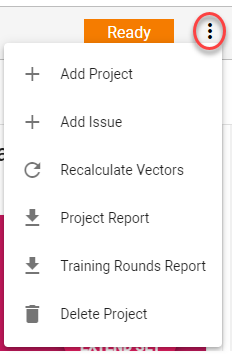
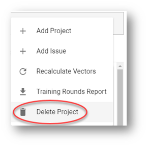

Note: Most of the following actions can only be performed once a project has been created
There are multiple actions you can take to manage your Assisted Review project. The documentation below details these actions.

|
|
Note: Most of the following actions can only be performed once a project has been created |
In a project, documents from a matter are reviewed and analyzed.
From the dropdown project menu, select + Add Project. The Create Project Wizard opens. For more information on the options available in this wizard, see
From the dropdown project menu, you can add a new issue to your project.
Text documents are converted to a document vector representation suitable for the system's learning algorithm, which classifies documents as being responsive or not responsive for an issue.
New documents might be added to the matter on which your project was based. To ensure these documents can be used by the Assisted Review process, document vector representation needs to be recalculated.
Click Project Report to download a PDF report containing data about the project and general statistics about the classification process at the moment of the report request.
Click Training Rounds Report to download a csv report containing data about the reviewed documents at the moment of the report request. The documents are listed by id number, document name, hash value, file type, issue name, responsiveness (Responsive/Not Responsive), training round number and reason (added, removed, changed).
|
|
Note: The Training Rounds Report will only become available after reviewing a full training batch (using the specific Assisted Review tags associated with the needed issue) and then selecting the New Training Batch button at the bottom of the Assisted Review Progress page.
|
Click Delete Project to remove it. All information from the project will be deleted, including issues/tags.
